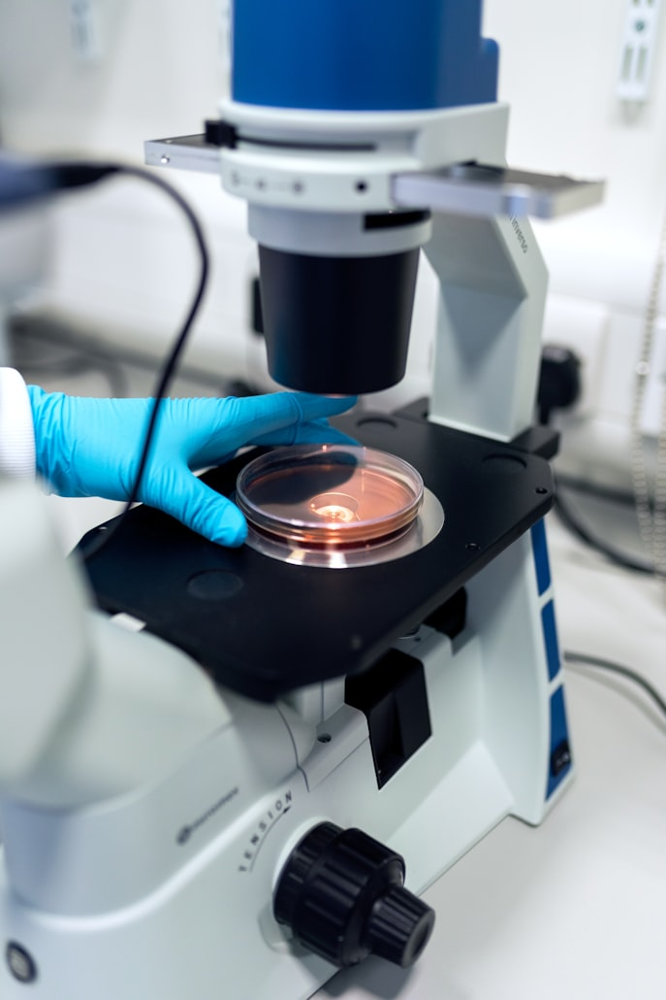

Submit Your Peptides for Independent Lab Analysis
Get accurate, research-grade reports from Optima Labs - trusted for purity, identity, and molecular
verification.

What We Test For
We offer a broad range of scientific testing services:
Full COAs ready for resale or internal verification
Legal Notice
Optima Labs testing services are for research use only. We do not test controlled substances, nor
provide any certification for human consumption or medical use.